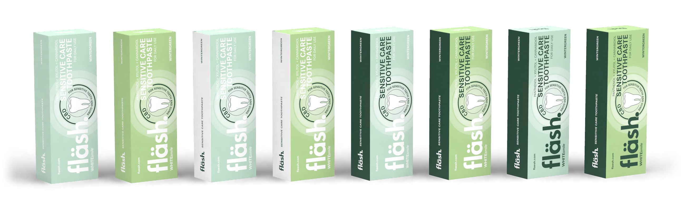

Faltschachtel und Tube im neuen Design
Acht Farbvorschläge für die Faltschachtel, dazu die weiße Tube und die bedruckte Innenseite. Alles ist nach Stanze und Druckdaten dreidimensional dargestellt. Ein Klick auf ein Bild öffnet die große Ansicht.

Farben
Die vier Sonderfarben der Packung
- PANTONE 573 UPMint
- PANTONE 358 CHellgrün
- PANTONE 553 CDunkelgrün
- PANTONE 431 CGrau
Die Tube
Weiße Tube, Ø 35 mm, 75 ml, gedruckt nach der Albéa-Vorlage. Sie ist für alle Farbvorschläge gleich.
Innenseite
So sieht die Schachtel innen aus, wenn man sie aufschneidet und flach hinlegt. Der Innendruck ist bei allen Farbvorschlägen gleich.
Farbvorschlag 1
Seite mint, Front mint, Logo weiß
Farbvorschlag 2
Seite hellgrün, Front hellgrün, Logo weiß
Farbvorschlag 3
Seite weiß, Front mint, Logo weiß
Farbvorschlag 4
Seite weiß, Front hellgrün, Logo weiß
Farbvorschlag 5
Seite dunkelgrün, Front mint, Logo weiß
Farbvorschlag 6
Seite dunkelgrün, Front hellgrün, Logo weiß
Farbvorschlag 7
Seite dunkelgrün, Front mint, Logo dunkelgrün
Farbvorschlag 8
Seite dunkelgrün, Front hellgrün, Logo dunkelgrün